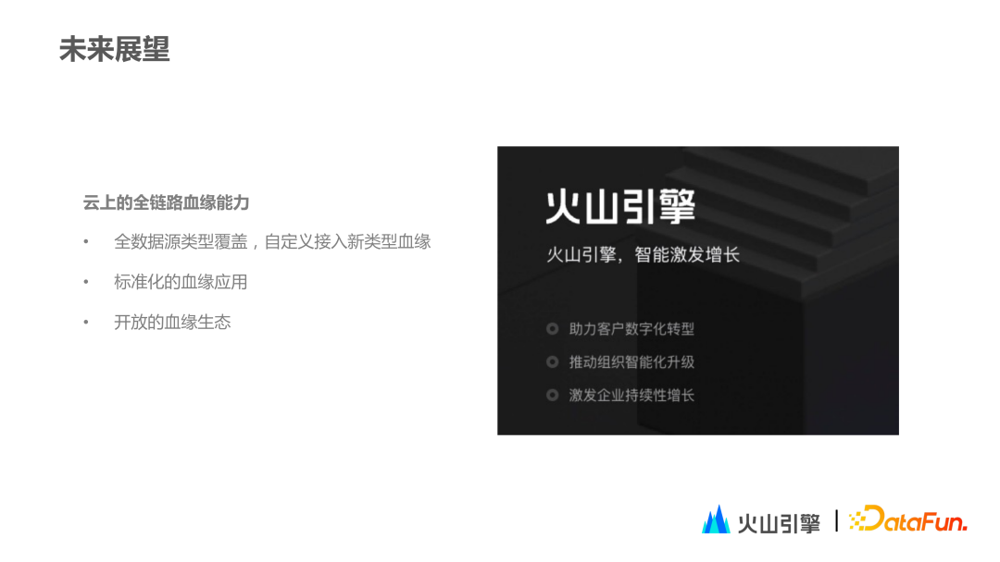

字节跳动DataLeap数据血缘实践
转自公众号：DataFunTalk
http://mp.weixin.qq.com/s?__biz=MzU1NTMyOTI4Mw==&mid=2247633710&idx=1&sn=333499a63df5e5c143b7a61d59b53df7

01
数据血缘模型
1. 数据血缘模型 – 挑战
首先介绍一下字节内部数据血缘遇到的挑战。
随着公司业务扩张、用户数量持续增长以及数仓建设不断完善，元数据种类和数量也经历了非线性增长，并在此期间涌现出一些问题。
第一，扩展性。好的扩展性可以在面对新型元数据血缘时保证快速接入和迭代，而扩展性不佳则会导致在业务变化时需要不停地重构来适应业务，对业务造成很多影响。
第二，性能。一个模型本身的插入和更新效率会直接影响数据的导入导出的流程，这些都会带来更直观的业务上的感受，所以需要考虑如何保证环节高效性。
第三，时效性。很多应用场景对正确率格外敏感，如果血缘数据有延迟，其实就等于血缘的不准确，会对业务造成影响。
最后，赋能业务。技术服务于业务，业务增长会帮助技术升级迭代，技术创新也会促进业务发展。在字节内部，我们会根据业务特点，考虑业务需要，将技术成本与业务收益做平衡，最终做出数据模型决策。总而言之，数据模型没有完美的方案，只有最适合企业自身业务、适合当前阶段的数据血缘方案。
2. 数据血缘模型 – 展示层
字节内部有很多种元数据类型，包括线上传统的离线数仓Hive、OLAP分析引擎ClickHouse，以及实时侧元数据，如Kafka和ES以及Redis。这些元数据所对应的表/Topic都统一维护在元数据平台上，目前血缘展示层是以这些数据资产作为主视角。
如下图所示，中心数据资产包含普通字段和分区字段等信息，还可以从图中看到中心资产上下游资产信息，上游有哪些相关的表，下游有哪些相关的topic或者表。图中资产和资产之间连接的边，代表的是生产关系：1个任务读取了上游的资产，产生了下游的资产。
3. 数据血缘模型 – 抽象层
再来介绍，火山引擎DataLeap如何设计抽象层。
抽象层是整个数据血缘的数据模型，主要包含两种节点，一种是资产节点，另外一种是任务节点。
在图中，资产节点用圆形表示，任务节点用菱形表示。具体举个例子：
以上就是整个血缘数据模型在抽象层的展现。
这样设计是有以下好处：
首先，任务资产的抽象是对生产平台上和在各种任务平台上广泛直接的任务关系的抽象，当再去接入新元数据或新任务类型时，我们只需要扩展当前抽象的资产节点和任务节点，即可把新加入进来的任务链路所对应的血缘接入到存储中。这种数据模型也能方便地更新和删除血缘链路，维持时效性。
其次，在字节内部的血缘建设中，还存在接入各种血缘链路的难点。基于目前设计可以减少开发成本，在更新血缘的时只需要更新中心任务节点，并且把中心任务节点所对应的子任务节点的边也做相应的更新和删除，就完成了血缘信息的插入和更新。
4. 数据血缘模型 – 实现层
在实现层，火山引擎 DataLeap 主要基于 Apache Atlas 来实现。Apache Atlas 本身也是一个数据治理的产品，它预定义了一些元数据的类型，整个类型系统有比较好的扩展性。在 Atlas 本身的 DataSet 和 Process 元数据定义上，我们引入了字节内部独有的业务元数据的属性和子任务定义，最终把任务相关的元数据存储起来。
Atlas 本身也支持血缘的查询能力，通过 Apache Atlas 暴露的接口来转换成图上查找某个节点对应血缘关系的边，以此实现血缘查询。
5. 数据血缘模型 – 存储层
在存储层，目前主要基于 Apache Atlas 原生图数据库——JanusGraph。JanusGraph 底层支持 HBase。我们将每条边的关系作为两边的资产节点的属性，存入到对应 RowKey 的独立 cell 中。
另外，我们也对存储做了相关的改造，如字节内部自研的存算分离 key-value 存储。我们也在独立环境中会做轻量级部署，同时基于性能或成本，以及部署复杂度，把存储切换为 OLTP 数据库，比如 MYSQL 数据库。
以上就是整个数据血缘模型的设计部分。通过这样的数据血缘模型，我们可以减少新的数据血缘链路接入开发成本，同时也很方便更新和删除血缘。
02
数据血缘优化
第二部分将主要介绍在火山引擎 DataLeap 中典型的数据血缘优化，包括实时数据血缘更新优化、血缘查询优化和血缘数据开放式导出。
1. 实时数据血缘优化
首先，实时数据血缘的更新。字节内部现在数据血缘的更新方式是通过 T+1 的链路和实时链路来更新。由于内部有很多场景对时效性的要求特别高，如果数据血缘更新不太及时，就是影响血缘准确率，甚至影响业务使用。
在数据血缘的架构设计之初就已经支持了 T+1 的导入，但是时效性始终是天级别的。
（1）数据血缘任务周期性的拉取所有在运行任务的配置信息，调用平台的 API 拉取对应任务相关的配置或者 SQL；
（2）对于 SQL 类型的任务会调用另外一个解析引擎服务提供的解析能力来去解析数据血缘的信息；
（3）再和元数据平台登记的资产信息相匹配，最后构建出一个任务资产节点的上下游，把这个任务资产节点和表资产节点之间的边更新到图数据库中去。
在实时更新的时候，我们有两种方案：
方案一：是在引擎侧，即在任务运行时，通过任务执行引擎把该任务在构建 DAG 后生成的血缘信息通过 Hook 送入。
（1）优点：在引擎侧的血缘采集是相对独立的，每个引擎在采集血缘的时候不会互相影响。
（2）缺点：
① 每个引擎都需要适配一个血缘采集的 Hook，一些中小企业在引擎侧都可能面临的一个问题是同一个引擎可能在线上运行会有多个版本，那么适配的成本就会比较高，需要每个版本都适配一次。
方案二：在任务开发的平台上把这个任务变更的消息送出，当任务的生命周期变化的时候，通过 Hook 消息把任务状态变更消息通过调用 API 进行登记或者发送到 MQ 进行解耦，血缘服务收到这份通知之后，再主动调用解析服务来更新这个任务血缘。
（1）优点：扩展性好，不会受到引擎侧限制，未来要接入新的引擎时，只需要在这个任务平台上去创建对应的任务，把这个任务变更的消息送出，就可以得到这个血缘更新的通知，然后去更新血缘。
（2）缺点：对血缘解析服务平台会有一定的改造成本，任务间的消息可能会互相影响。
综合比较，我们采用了第二种方案，并且引入了MQ进一步的降低任务平台和血缘平台的耦合，这种做法可能牺牲了部分的延迟，但是会让整个链路变得更加可靠，最终减低了血缘这边整体的延迟，从天级别减低到了分钟级别。
以上就是我们在血缘时效性上的优化。
2. 数据查询优化
第二个优化点是查询。目前字节数据血缘查询依赖 Apache Atlas。在使用该血缘查询服务时，有一个很普遍的场景，就是多节点查询的场景。在影响分析的过程中，我们经常会查询一张表的全部字段血缘，会转化成查询多个节点的血缘上下游关系，需要解决查询效率的问题。
有两种基本的解决方案：
一种是直接在应用层进行封装，对 Apache Atlas 血缘服务的暴露层新增一个接口，比如通过循环遍历去执行单个查询，这样改造的内容是很少的，但是其实性能并没有提升，而且实现比较暴力。
另外一种方式是改造 Apache Atlas 血缘服务对图库查询的调用。因为 Atlas 使用 JanusGraph 作为底层的实现，提供了一部分的抽象，但是只暴露了单节点的查询，而没有批量查询的方法，我们只需要适配 JanusGraph 这边批量查询的接口，就可以达到提速的效果。
所以我们在图数据库的操作入口增加了一个新的批量查询的方法，通过这种方式对血缘节点进行批量查询，来进一步提升性能。同时 Atlas 在查询血缘节点回来之后，需要进行一个映射，映射到具体的实体上去拿回它的一些属性，在这个过程中我们也加入了异步批量的操作方式来进一步的提升性能。经过优化之后，我们在对一些引用热度比较高的表资产节点或者查询表资产或者对应列的时候，效率都可以得到明显提升。
3. 血缘数据开放式导出
第三个优化点是在血缘的导出上提供了多种方式，除了在页面上可视化的查询血缘的能力之上，我们也陆续提供了很多使用血缘的方式，包括下载到 Excel,或者查询这个血缘数据导出的数仓表，或者直接使用服务平台侧开放的 API，还可以订阅血缘变更的 topic，来直接监听血缘的变更，下游的用户可以根据自己的开发场景，以及业务对准确率、覆盖率的要求，来决定到底使用哪种方式来消费血缘数据。
03
数据血缘用例
接下来第三部分主要介绍数据血缘的具体用例，介绍字节内部是如何使用数据血缘的。在字节内部数据血缘用例的典型使用领域主要包括：资产领域、开发领域、治理领域和安全领域。
1. 数据血缘用例 – 资产领域
首先在资产领域，数据血缘主要应用在资产热度的计算。在资产热度计算时，有些资产会被频繁消费和广泛引用。某个资产被众多下游引用，是自身权威性的证明，而这种权威性的证明需要一种定量的度量，因此需要引入了“资产热度”的概念。资产热度本身是参考网页排名算法PageRank算法实现的，同时我们也提供了资产热度值，根据资产的下游血缘依赖的情况，定义了资产引用的热度值，如果某个资产引用热度值越高，就代表了这个资产更应该被信任，数据更可靠。
另外，血缘也可以帮助我们理解数据。比如用户在元数据平台或者血缘平台上查询数据资产节点的时候，可能是想要进行下一步的作业开发或者是排查一些问题，那么他就需要首先找到这个数据资产。用户不了解数据产生的过程，就无法了解数据的过去和未来。也就是哲学上经典的问题：这个表到底是怎么来的？它具体有哪些含义？我们就可以通过数据血缘来找到具体表的上下游信息。
2. 数据血缘用例 – 开发领域
数据血缘的第二个用例是开发领域。在开发领域中会有两个应用：影响分析和归因分析。
（1）影响分析应用
影响分析应用是事前分析。也就是当我们对表资产做一些变更的时候，在事前需要感知这个变更的影响，处于血缘上游的资产负责人在修改对应的生产任务的时候s，就需要通过血缘来查看自己资产的下游，来判断这个资产修改的影响，针对修改的兼容性或者某条链路的重要性，来对应的做一些通知的操作，否则会因为缺少通知而造成严重的生产事故。
（2）归因分析应用
归因分析应用是事后分析。比如当某个任务所产生的表出现了问题，我们就可以通过查询血缘的上游，逐级寻找到血缘上游改动的任务节点或者资产节点来排查出造成问题的根因是什么。在发现和定位出了问题之后，我们会去修复数据，在修复数据的时候，我们可以通过血缘来查找任务或者表的依赖关系，对于离线数仓可能就需要重跑某个分区的输出数据，我们需要根据血缘来划定范围，只需要回溯对应受影响的下游任务就可以了，减少一些不必要的资源浪费。
3. 数据血缘用例 – 治理领域
在治理领域应用中，血缘关系在字节内部也有典型的使用场景：链路状态追踪和数仓治理。
（1）链路状态追踪
比如在重要的节日或者活动的时候，我们需要事先挑选一些需要重要保障的任务，这时就需要通过血缘关系来梳理出链路的主干，即核心链路。然后去对应的做重点的治理和保障，比如签署 SLA。
（2）数仓治理
在数仓建设方面，也会使用血缘来辅助一些日常的工作，比如规范化治理。数仓规范化治理包括清理数仓中分层不合理的引用，或者是数仓分层整体不规范，存在一些冗余的表。比如，两个表来自同一个上游表，但是它们在不同层级，这些冗余的表就需要被清理掉的，这种场景就是使用血缘来辅助治理的一个典型用例。
4. 数据血缘用例 – 安全领域
安全相关问题在一些跨国或国际化产品企业会比较常见，每个国家地区的安全政策是不一样的。我们在做安全合规检查时，每个资产都有对应的资产安全等级，这个资产安全等级会有一定的规则，比如我们规定下游资产的安全等级一定高于上游的安全资产等级，否则就会有权限泄露问题或者是其他的安全问题。基于血缘，我们可以扫描到这些规则涉及的资产下游，来配置相应扫描规则，然后进行安全合规排查，以便做出对应的治理。
另外，血缘在标签传播方面也有所应用，可以通过血缘的传播链路来进行自动化工作，比如对资产进行安全标签打标的时候，人工的打标方式会相对比较繁琐而且需要关注链路的信息，那么就可以借助血缘信息来完成自动的打标，比如配置一些规则让安全标签明确场景、节点和终止规则。
以上这些都是数据血缘在字节内部的一些典型用例，我们也在探索更多的使用场景。
根据其对血缘质量的要求，这些场景被分成了几个区域。根据血缘覆盖率、血缘准确率的要求，可以分为四个象限，比如其中一类是需要覆盖全链路且血缘准确率要求异常高的，例如开发项的两个用例，因为在开发项的用例中，血缘的延迟会严重影响决策上的判断，对血缘质量要求是最高的。
04
未来展望
在业界，血缘的发展趋势主要关注以下几点：
（1）通用的血缘解析能力
血缘是元数据平台的核心能力，很多时候元数据平台会接入多样化元数据，这些业务元数据也会依赖血缘不同的血缘解析能力，现在的解析往往是依赖各个引擎团队来支持的，但是其实在更加广泛的场景，我们需要有一个兜底的方案来提供一个更通用的血缘解析能力，所以未来我们会提供标准 SQL 解析引擎，以达到通用解析的目的。
（2）非侵入式的非 SQL 类型血缘采集
除了可解析的 SQL 或可配置的任务，日常还会涉及到代码类型的任务，如 JAR 任务。JAR 任务现在的解析方式是根据一些埋点信息或者用户录入的上下游信息去完成血缘的收集，这部分未来会出现一种非侵入式的非 SQL 类型血缘采集的技术，比如 Flink 或者 Spark 的 JAR 任务，我们可以在任务运行时拿到这些血缘，来丰富平台侧血缘的数据。
（3）时序血缘
时序血缘也是字节内部的考虑点。目前血缘信息图数据库相当于是对当前血缘拓扑的一次快照，其实血缘是会变化的，比如用户在修改一个任务的时候，上线任务变更或是修改表结构，然后对应的修改自己生产任务的时候，涉及到时序的概念，这个时序可以方便我们去追溯一些任务的变化，支持我们去做事前事后影响分析，所以时序血缘如何在图数据库中引入也是未来的一个趋势。
2. 数据血缘的应用趋势
（1）标准化
前文提到很多应用场景的底层能力都是通过接口来获得，获得接口的数据也涉及到应用的标准化，标准化的应用可以让我们移植到更多的业务上，提供更好的血缘数据分析帮助。
（2）端到端的血缘打通
另一个应用趋势是端到端的血缘能力，现在平台主要接入资产节点，端到端则会涉及到更上游，如 App 端和 Web 端采集的数据，或者是下游报表，以及 API 之后最终的节点。在血缘收集中，这部分信息目前缺失，端到端血缘打通将是未来应用上的趋势之一。
3. 云上的全链路血缘能力
在字节跳动内部，血缘能力会进行上云，云上涉及各类数据类型，因此血缘发展方向之一是把各类异构数据类型统一接入，并且支持云上用户来自定义接入新类型血缘。
同时，当数据应用标准化之后，也可以把血缘应用提供给云上用户，云上用户也可以反向加入到血缘应用的开发中，最后把数据血缘模型作为一种标准来推广，由此衍生出更好的血缘应用、血缘服务生态。
